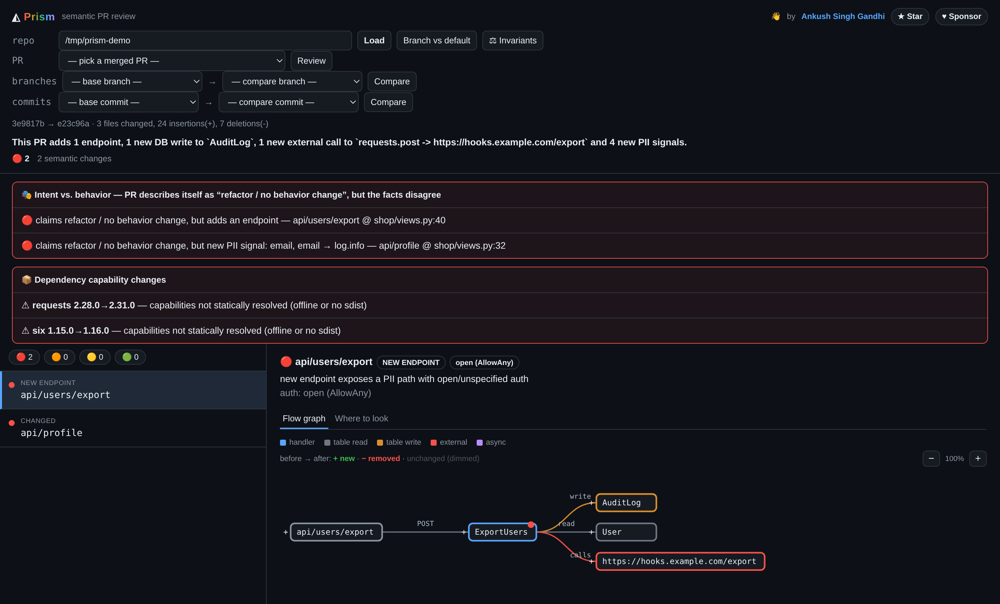

Git tells you what lines changed. Lenscheck tells you what they mean — and points you at the exact line.
pip install lenscheck-semantic-reviewer
A line-diff buries the one change that matters — “user email now leaves the server” — under thousands of mechanical edits. You don’t need to read all of it. You need four answers.
What changed — in behavior, not in lines.
How it flows — route → handler → db → external call.
Where to look — the exact file:line, not the whole file.
Whether it broke a promise — a rule your code always kept.
A real Django “add discovery, ads & growth” PR. On the left, the git diff you’d have to read. On the right, what Lenscheck says the moment it lands.
diff --git a/feed/views.py b/feed/views.py +import httpx +import requests +from django.core.cache import cache class StoriesView(APIView): - permission_classes = [IsAuthenticated] + permission_classes = [AllowAny] class PostCreateView(APIView): + httpx.post(MODERATION, json={"media_url": ...}) + notify_followers.delay(post.id) + requests.post(ADS, json={"email": request.user.email}) +class DiscoverUsersView(APIView): + permission_classes = [AllowAny] + return {"users": [{"email": u.email, "phone": u.phone}]} +class AccountDeleteView(APIView): + permission_classes = [AllowAny] + User.objects.filter(pk=request.data["id"]).delete() … + 46 more lines across models.py, urls.py
No running your code, no guessing. Lenscheck reads structure with Python’s own parser (AST) — the same three steps, every time.
Reads code into behavior facts — routes, auth, db, calls, PII.
Compares the two sides of the PR — what changed in behavior.
Ranks it worst-first and points at the exact line.
It never executes anything — it analyzes clean git snapshots statically, so it’s safe to point at any repo.
A ranked list, an interactive flow graph for every change, and the exact file:line — wherever you already work.

● NEW ENDPOINT /api/companions/payment payment_views.py:90 ● CHANGED /api/orders/invoice new external call: razorpay.post ● REFACTOR /api/users/profile nothing to see
Lenscheck — 3 things to look at 🔴 NEW ENDPOINT /api/companions/payment PII path, open auth · payment_views.py:90 Inline notes are pinned to the exact changed line, with a sticky summary comment kept up to date.
● Critical New PII egress on unauthenticated endpoint services.py:9 · rule: lenscheck/pii-egress Findings upload as SARIF to the GitHub Security tab when GitHub Advanced Security is enabled (optional).
Every finding traces to an exact file:line — deterministic, honest about the unknown, and free.
lenscheck map — every endpoint grouped by app, worst-first. “What’s here,” not just “what changed.”
The exact field → the exact line where it leaves the app. Traced, not guessed.
It mines the rules your code already keeps and flags the PR — and the commit — that breaks one.
Flags a bumped package that newly gains network / subprocess / native code.
Each finding pinned to its changed line, a sticky summary, a triage label, and the Security tab.
lenscheck digest — the open risky PRs across every repo, one number for leadership.
Explore all features — the map, the seven-edge lens, invariants & more →
Lenscheck reads endpoints, not one framework. Each new stack is just a new extractor — deterministic, refactor-stable, PII tracing and all, come along for free.
Same endpoint lens — the framework changes, the guarantees don’t. Want one prioritized? tell me which →
LLM reviewers guess and bill per PR; static scanners flood you with whole-file noise. Lenscheck is deterministic and behavior-aware — facts that trace to a file:line, silent on pure refactors, and it learns the rules your code already keeps. It doesn’t replace your tests; it sees a different layer: behavior at the endpoint.
| LLM reviewers | Static scanners | Lenscheck | |
|---|---|---|---|
| Deterministic · no token bill | ✗ no | ✓ yes | ✓ yes |
| Reviews the behavior change | ~ partial | ✗ no | ✓ yes |
| Refactor-stable (renames = no noise) | ✗ no | ✗ no | ✓ yes |
| Learns your repo’s own rules | ✗ no | ✗ no | ✓ yes |
See the full comparison — vs CodeRabbit, Copilot, SonarQube & Semgrep →
Lenscheck looks at your backend from both sides — the diff from the outside and the running app from the inside. Each catches what the other structurally can’t.
A GitHub Action / CLI that reads the PR diff (AST, no LLM) and comments on what actually changed and where to look. One secret, zero code.
pip install lenscheck-semantic-reviewerPyPI ↗A library inside your Django, Flask, or FastAPI app that records what it really does — routes, models, effects, background jobs — fails CI on a risky change, and blocks undeclared calls at runtime.
pip install lenscheck-contractPyPI ↗Together they close the loop: the contract exports your app’s real rules, and the reviewer enforces them on every PR — so a brand-new domain sneaking into a diff becomes a critical alert grounded in fact, not a hunch. Explore lenscheck-contract →
Needs Python 3.8+ and git. No account, no key: everything runs on your machine.
pip install lenscheck-semantic-reviewer
cd your-django-project
lenscheck review . --pr 481
- uses: AnkushSinghGandhi/lenscheck-semantic-reviewer2@main
No signup, no API key, no usage limits. Install it, run it, read the code.
Star it on GitHubFound a bug or a false positive? Open an issue · read the docs
Every rough edge you flag makes it sharper. Find a bug or a confusing result? Open an issue — no sign-up, no agreement. Everyone who files a valid report gets their name + GitHub featured here, and a merged fix earns you stickers in the post. 🎉
A clear repro and the command you ran is gold. Reporting needs no CLA — on any repo.
Report an issueThe MIT lenscheck-contract takes PRs freely — new framework probes, ORM support, examples.
Contribute (no CLA)Valid report → featured on this wall. Merged fix → stickers shipped to you. Simple.
Read contributing